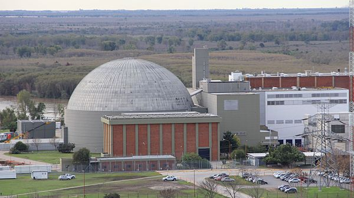

Real Chubut - Agencia de Noticias


Atucha en crisis: renunció el directorio y confirmaron 2.400 despidos

La operadora del complejo nuclear dio un paso al costado en medio de la paralización de las obras. Sindicatos convocaron a medidas de fuerza
La crisis y el ajuste se instalaron en el complejo nuclear de Atucha. El directorio de Nucleoeléctrica Argentina S.A. (NASA), operadora de la instalaciones, renunció ayer en medio de una parálisis de la obras pendientes y de 2.400 despidos de trabajadores, que prestan tareas en el partido bonaerense de Zárate.
El secretario general de la Unión de Empleados de la Construcción (Uecara), Antonio "Cacho" López, aseguró que "estas renuncias lo que hacen es complicar más la situación" y anticipó que el próximo lunes el gremio que conduce realizará una asamblea gremial en la puerta de las centrales nucleares, donde decidirán la puesta en marcha de un plan de lucha en el que no descartan la realización de una huelga general.
"Convocamos a los gremios hermanos de Uocra y Luz y Fuerza a sumarse a la asamblea para tomar medidas conjuntas", afirmó, al tiempo que aseguró que "el 31 se quedan en la calle 600 compañeros nuestros y 1800 de Uocra".
El dirigente sindical concurrió ayer a una audiencia en la Dirección Nacional de Relaciones Laborales con el propósito de resolver este conflicto, cuyo resultado fue un fracaso. "No tuvimos suerte, acá se terminó todo y otra vez no vino ningún representante del ministerio de Energía. Estuvo nuestro gremio y directivos de NASA, de algunas contratistas como Vialco y Mazoero y varios trabajadores", precisó.
El impacto de la parálisis de las obras golpea de lleno a las firmas contratistas de las centrales nucleares, que informaron a sus empleados la puesta en marcha de recortes de personal. "Las empresas nos dicen que hay que esperar como unos seis meses para la continuación de las obras, pero el trabajador no puede esperar", fustigó Lopez.
"La de hoy fue una audiencia muy larga en la que los contratistas nos dijeron que no pueden pagarnos los sueldos porque ellos no reciben los pagos de NASA", denunció el referente de Uecara, que representa a los capataces, administrativos y técnicos de la actividad.
Uno de los encargados de electricidad de Atucha, Jorge Ponce, lamentó tras la audiencia la ausencia del Ministerio de Energía a la que calificó como una demostración de que "no le interesa para nada las familias" que no cobran sus haberes y perderán sus empleos. "Parece que somos un número, no sé que somos para ellos", cuestionó.
El complejo de Atucha está compuesto por dos centrales, ambas ubicadas en la localidad de Lima, partido de Zárate, donde se proyecta la obra de una tercera planta, Atucha III. Tras el cambio de gestión, el gobierno de Mauricio Macri comenzó a revisar todos los contratos y aún no dijo que haría con los proyectos en curso, entre ellos Atucha III y las represas Jorge Cepernic y Néstor Kirchner, en Santa Cruz, que están detenidas y bajo análisis del ministro de Energía, Juan José Aranguren.
El parate de Atucha tuvo su réplica en las empresas proveedoras. Ayer en la firma PIAP, que elabora agua pesada para las centrales nucleares, los trabajadores manifestaron su preocupación por la pérdida de mil empleos en caso de que las obras se paralicen. Se trata de un caso más de un estado de alarma entre los empleados del sector que ya tuvo sus primeras protestas y cortes de ruta en Santa Cruz.
Repudio de De Vido
El diputado nacional Julio De Vido presentó ayer un proyecto de declaración que expresa la "preocupación y repudio contra los despidos y suspensión de puestos de trabajo efectuados en la Planta Nuclear Atucha de la localidad de Zárate de la provincia de Buenos Aires que son de público conocimiento".
En el texto, que acompañaron los diputados Abel Furlan, Mayra Mendoza, Teresa García, Adrián Grana, Carlos Castagnetto y Rodrigo Rodríguez, también se pone de manifiesto la "preocupación y repudio contra la paralización de las obras relacionadas directamente con el Plan Nuclear Argentino" y se adhiere a la resolución aprobada en una sesión especial del Concejo Deliberante del municipio de Zarate en la que también se rechazaron dichos despidos.
Fuente: Infobae